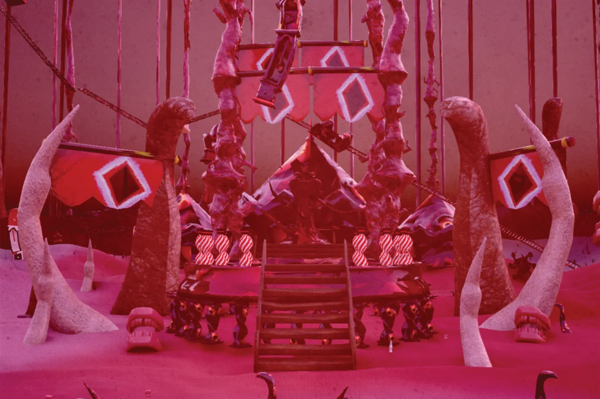

Knia-Knia
The Mad Jester
Un personaje y su mundo, hechos de principio a fin: concepto, modelado, texturas, ropa, cabello y rig. Vive en un lugar fuera del tiempo y el espacio, donde todo es ridículo, absurdo y caótico.
ZBrush, Maya, Substance 3D Painter, Redshift, Unreal Engine
Ver Knia-Knia